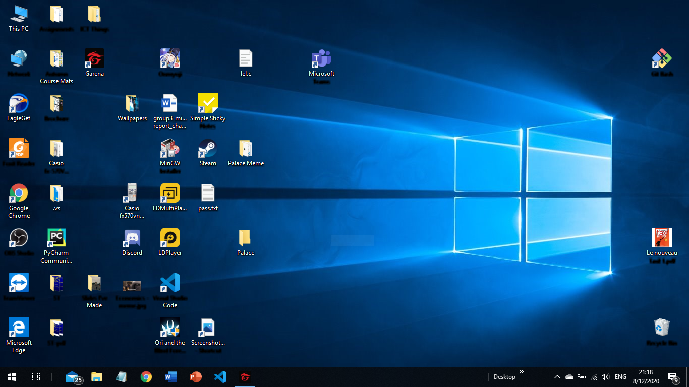
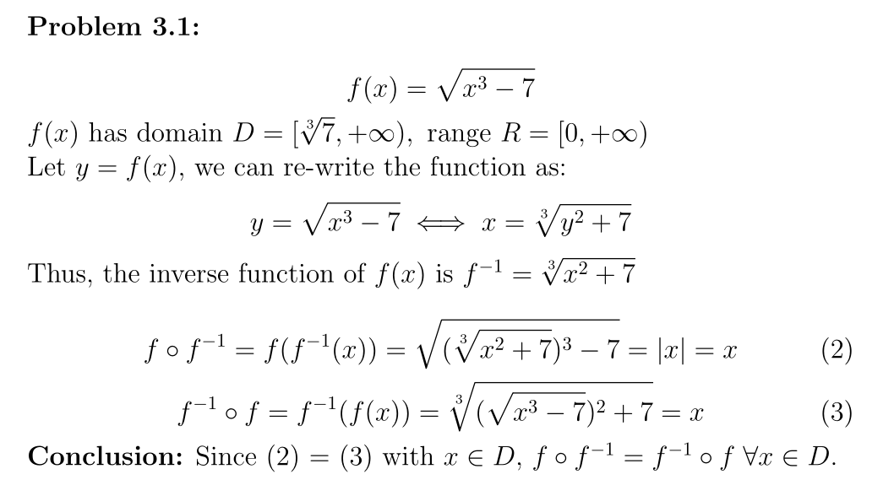
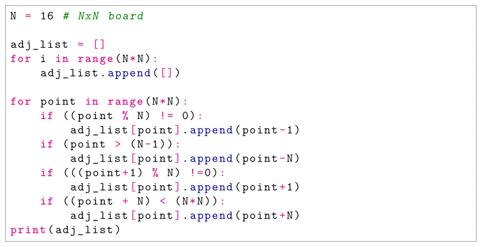
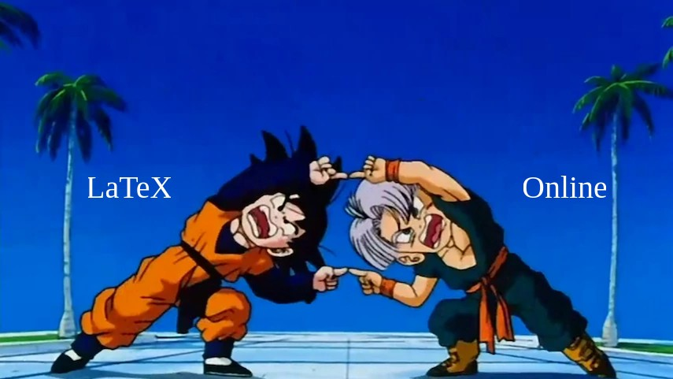

Microsoft Office, huh? Not my type!
Feb 1, 2021
I'm a third year student and about to graduate. During my studie-ing process, I had to write a decent chunk of papers and reports, and none of those report and slides was written using office's tool like Word or Powerpoint. So why I'm become so hated of office's tool? And what I used to replace those?
Jesus christ Windows is buggy as hell
The very first reason is that I'm not having good experience with the operating system itself. Windows does update very often, but those minor bugs still remains. I've suffered freezing of touchpad from the beginning of first year second semester till the very end of my second year. However, I have to thank this bug since it give me reason and opportunity to start using Linux.
I still keep Windows as an entertainment platform as most games runs on it and I don't want to mess up my work environment by installing emulators such as WINE. And look at what Windows gave me when I tried to boot it up to start playing some games:
I know that's kinda messy cuz I don't use it much but hooley shiet look at that crashed fonts!
New era of Online tools
As our university encourages collaboration between students, they often offers large-enough-projects to make us, student, to work in a group of 3 to 5 people. With offline Office tools, we struggle between sharing papers, and dividing works seems like a difficult task. On the other hand, online tools like Gdocs offers alot in term of real-time working as different people could access and edit the same file, as well as communicate via comments and chat box. Therefore, we shifted toward using available online tools to write papers.
For presentation and project defense, we could also use Google Slides instead of offline PowerPoint. Of course there won't be some fancy transition effects or animations but that's more than enough for the presentation. Also, the more flashy you put into the slides, the more distract listener will be. Hence, the use of Google Slides is prior than the use of Powerpoint in our university (or at least our department).
LaTeX, the sleeping beauty
What if I tell you, there is a text editor, that is much more beautiful than your familiar Office Word? Yes, LaTeX with default font is stunning for writing papers. Moreover, it does support rendering proper Mathematical functions and symbols.
This is my answer to a very elementary problem, but look at these Mathematical symbols!
Not only that, it also renders code blocks, which is very helpful for students majoring in ICT like us.
A Python code block is perfectly rendered!
For making slides, we could use beamer, a LaTeX document class. With the introduction of frame,
and the help of LaTeX theme, we are able to make pretty slides. There will be no transitions effects
as well as no animations, but as the trade off of having pretty Mathematical symbols, we take those.
What if... we combine both of the above?
Overleaf is a well-known tool for editing LaTeX online. It also has a lot of documents to guide new comers. Overleaf is also my very first choice when writing reports or making slides. Therefore, why not start using it right now?